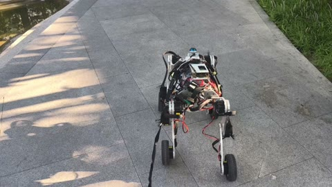

Broadened the training envelope
The retained configuration randomizes mass, center of mass, friction, gains, reset state, pushes, and action/proprioceptive latency.
Core project 01 · real-robot locomotion
A PPO locomotion policy was deployed through a multi-rate stack spanning ONNX inference, Linux shared memory, two STM32F407 controllers, four CAN buses, and 16 actuators.
My Role
The video and images below are qualitative hardware records; no aggregate success rate is claimed.
System architecture
Policy updates are held between lower-level refreshes. The bridge only releases a fused observation when feedback from both MCUs belongs to the same accepted epoch.
Sim2Real and debugging
An early hardware policy could stand and move, but a kick produced growing oscillation. I treated this as a diagnosis problem rather than as evidence for or against PPO.
The retained configuration randomizes mass, center of mass, friction, gains, reset state, pushes, and action/proprioceptive latency.
The deployment state machine constructs the same 57-D observation ordering used by the exported policy.
Epoch matching, sample age, USB skew, and watchdog behavior prevent mixed-device feedback from being treated as current state.
Hardware record
Still images make the platform and test setting visible; the representative video remains available for reviewing behavior.


What I learned
This project made the difference between a packet arriving and a usable robot observation concrete. It motivates my interest in state estimation and control policies that represent sensing age, action delay, and confidence explicitly.